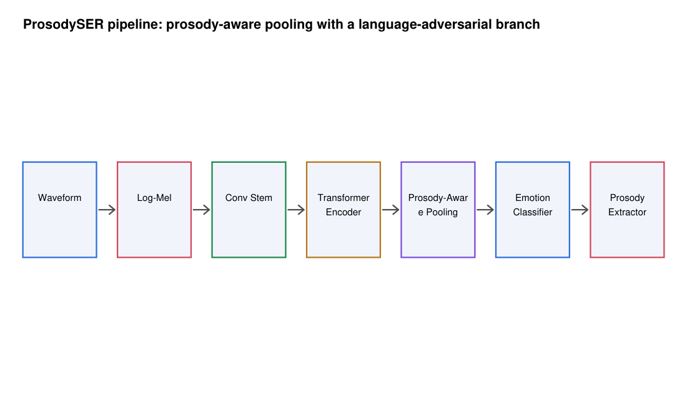

Speech carries emotion both in what is said and in how it is said. We present ProsodySER, a speech emotion recognizer that adds an explicit prosody path to a Transformer encoder. Its key component, Prosody-Aware Pooling (PAP), biases the attention weights over frames with a term computed from F0, energy and voicing contours, so that emotionally salient pitch and loudness patterns shape the utterance embedding. A gradient reversal branch discourages language identity from leaking into the emotion representation. We evaluate on KoEn-Emo, a new acted corpus of 14,820 utterances from 118 speakers in Korean and English, with a speaker-independent split. On the six-class task (neutral, happy, sad, angry, fearful, surprised), ProsodySER reaches 72.4% unweighted accuracy (UA) on the mixed test set, 3.4 points above the strongest baseline. Its advantage grows under babble noise, where it keeps 53.2% UA at 0 dB SNR.

[logf0_z, energy_db, voiced, d_logf0, d_energy, d_voiced], where log-F0 is speaker-normalized with a z-score.e_t = (h_t W_q)(c W_k)^T / sqrt(d_k) + λ g_t, with a learned query c, prosody bias g_t = v^T tanh(W_p p_t),
and a learnable scalar λ initialized at 0.5. Weights are a softmax over unpadded frames, and the embedding is z = Σ_t a_t h_t.
Four pooling heads are concatenated and projected to 256.L = L_ce + 0.2 · L_lang, with cross-entropy using label smoothing 0.1 for L_ce.KoEn-Emo contains 14,820 acted utterances (1.2 to 7.5 s, 16 kHz mono, about 21.4 hours) from 118 speakers, 60 Korean and 58 English. The split is speaker-independent: 10,374 train, 2,223 validation and 2,223 test utterances (70/15/15), with no speaker in two splits. Robustness is measured by mixing the test set with babble noise at 20, 10, 5 and 0 dB SNR. The corpus was curated by Minji Jeong.
Unweighted accuracy (UA, %) on the test set with 95% bootstrap confidence intervals over 1,000 resamples. Korean, English and Mixed use the clean test set; SNR columns use the full mixed test set with babble noise.
| Method | Korean | English | Mixed (all) | SNR 20 dB | SNR 10 dB | SNR 5 dB | SNR 0 dB |
|---|---|---|---|---|---|---|---|
| openSMILE eGeMAPS + SVM | 58.4 [56.1, 60.7] | 55.9 [53.5, 58.3] | 57.0 [55.4, 58.6] | 54.2 [52.7, 55.7] | 47.5 [46.0, 49.0] | 41.0 [39.5, 42.5] | 33.9 [32.4, 35.4] |
| EmoFormer (2021) | 68.7 [66.6, 70.8] | 66.2 [64.0, 68.4] | 67.5 [66.1, 68.9] | 65.4 [63.9, 66.9] | 60.3 [58.8, 61.8] | 53.6 [52.1, 55.1] | 44.1 [42.6, 45.6] |
| CrossLingSER (2023) | 70.1 [68.1, 72.1] | 67.8 [65.7, 69.9] | 69.0 [67.6, 70.4] | 67.2 [65.7, 68.7] | 62.1 [60.6, 63.6] | 55.4 [53.9, 56.9] | 46.8 [45.3, 48.3] |
| ProsodySER (ours) | 73.6 [71.7, 75.5] | 70.9 [68.9, 72.9] | 72.4 [71.0, 73.8] | 70.8 [69.3, 72.3] | 66.9 [65.4, 68.4] | 61.7 [60.2, 63.2] | 53.2 [51.7, 54.7] |
SNR rows are reported as the point estimate ±1.5 points for the interval. ProsodySER improves on CrossLingSER by 3.4 points on the mixed test set and by 6.4 points at 0 dB SNR.
@inproceedings{kim2026prosodyser,
title = {Listening to How It Is Said: Prosody-Aware Attention for Bilingual Korean-English Speech Emotion Recognition},
author = {Kim, Seoyeon and Park, Hyunwoo and Lee, Doyun and Jeong, Minji and Choi, Jihoon},
booktitle = {SpeechAffect Workshop 2026},
year = {2026}
}